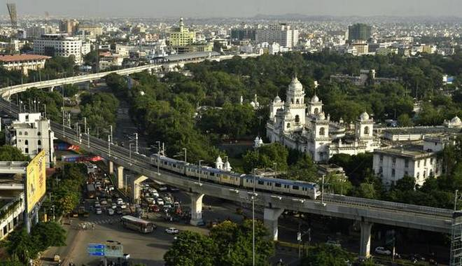

Tourism
Introduction: The city has more than just one or two tourist spots to offer you with for the purpose of sightseeing. Most popular of all the tourist spots is the Charminar. A tour to Hyderabad, be it business, adventure or family, is incomplete without a visit to Charminar which was built in the year of 1591 by Mohammed Quli Qutb Shah who is referred as the founder of Hyderabad.
Ramoji Film City is also one of the important tourist destinations. Popular amongst people from all over the country, the place is perfect for spending some fun filled moments. Golconda fort, one of popular forts in the country, can be traced back to Yadava Dynasty of Deogiri and the Kakatiyas of Warangal. Its imposing figures and marvelous architecture makes for an interesting sightseeing.
There are many other historical and cultural places to visit on your Hyderabad tour. Our Hyderabad Tourism Packages covers all the historical / heritage tourism places in Hyderabad. The tombs of the legendary Qutb Shahi kings, Chow Mohalla Palace, Taramati Baradari which is located at Ibrahimbagh, Birla Mandir, Salar Jung Museum, AP State Archaeological Museum are few of the places. Others like Nehru Zoological Park, Shilparamam (The Arts & Crafts Village), Hitec City, Hussainsagar Lake which was excavated in 1562 A.D. by Hussain Shah Wali, NTR Gardens, Necklace Road, Tank Bund, Prasads Multiplex, Lumbini Park, Sanjeevaiah Park, etc also makes your Hyderabad trip an enjoyable one. The Nizam‘s Silver Jubilee Museum, Durgam Cheruvu, Chilkur Balaji Temple, Hyderabad Botanical Gardens, KBR National Park, Mrugavani National Park, Mahavir Harina Vanasthali National Park, Osmansagar, better known as Gandipet, Shamirpet are few more.
Some Iconic Places to visit in Hyderabad
Charminar
Golconda Fort
SalarJung Museum
Hussain Sagar
Ramoji Film City
Nehru Zoological Park
Qutb Shahi Tombs
Mecca Masjid
Birla Science Museum
Telangana Tourism : oficial site of State tourism board
Below are popular packages from : Hyderabad Tourism

Ravishing Hyderabad Package (3 Nights / 4 Days) 34HY01
Starting @ Rs.15,499/- per Couple with Basic 3 Star Hotel.
View Details
Splendid Hyderabad Package (3 Nights / 4 Days) 34HY02
Starting @ Rs.16,999/- per Couple with Premium 3 Star Hotel.
View Details

Mesmerizing Hyderabad Package (3 Nights / 4 Days) 34HY03
Starting @ Rs.17,690/- per Couple with Premium 3 Star Hotel.
View Details